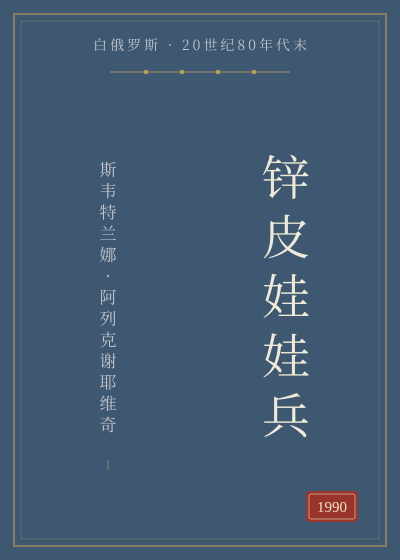
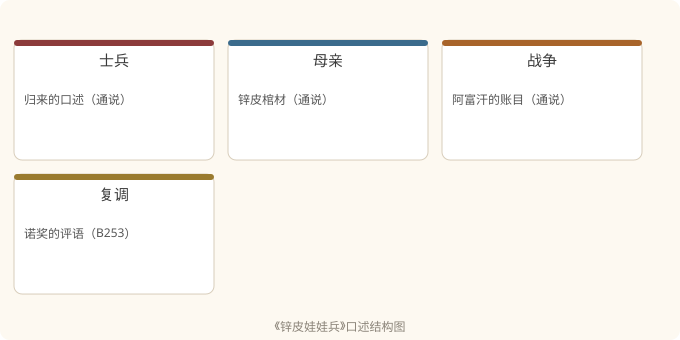

锌皮娃娃兵
一、基本信息
| 作者 | 斯韦特兰娜·阿列克谢耶维奇 |
|---|---|
| 成书/出版 | 1990年（Britannica B253：Zinky Boys (1990)——中译名通说待核） Svetlana Alexievich — Encyclopaedia Britannica（百科全书） |
| 国别/地区 | 白俄罗斯 |
| 时代 | 现当代 · 20世纪80年代末 |
| 体裁 | 纪实文学（口述实录） |
| 语言 | 俄语 |

《锌皮娃娃兵》口述结构图（主题·结构图）
二、创作背景
Britannica（B253）：Zinky Boys (1990)——作者页列举（阿富汗战争题材——通说待核）。
Britannica（B253）：方法——'human voices were allowed to speak for themselves'；'a history of human feelings'。
Britannica（B253）：2015诺奖授奖词——'for her polyphonic writings, a monument to suffering and courage in our time'。
三、内容脉络
阿富汗战争归来的士兵与母亲们的口述（题材通说待核——B253未载细节）。
'锌皮棺材'：战争的代价（书名意象通说待核）。
四、主要人物表
| 人物 | 身份 | 说明 |
|---|---|---|
| 众声受访者 | 士兵/母亲 | （通说待核，B253未载） |
五、主题与艺术特点
- 战争的口述档案（B253 方法）。
- 母亲与士兵的对话（通说待核）。
- 政治与身体的账目（通说待核）。
六、影响与评论
- Britannica：'polyphonic writings'——2015诺奖（B253）。
Svetlana Alexievich — Encyclopaedia Britannica（百科全书） - Britannica：'hybrid literary genre'（B253）。
Svetlana Alexievich — Encyclopaedia Britannica（百科全书）
七、阅读建议
难点
- 苏联阿富汗战争史（1979-89——通说待核）。
- 口述的伦理。
- 《锌皮娃娃兵》中译本（中信等——通说待核）。
- 俄文原版。
与《切尔诺贝利的祭祷》对读。
八、待核实
- 中译名两说（《锌皮娃娃兵》/《锌皮男孩》）待核。
- 1990年出版争议细节待核。
- 章节结构待核。